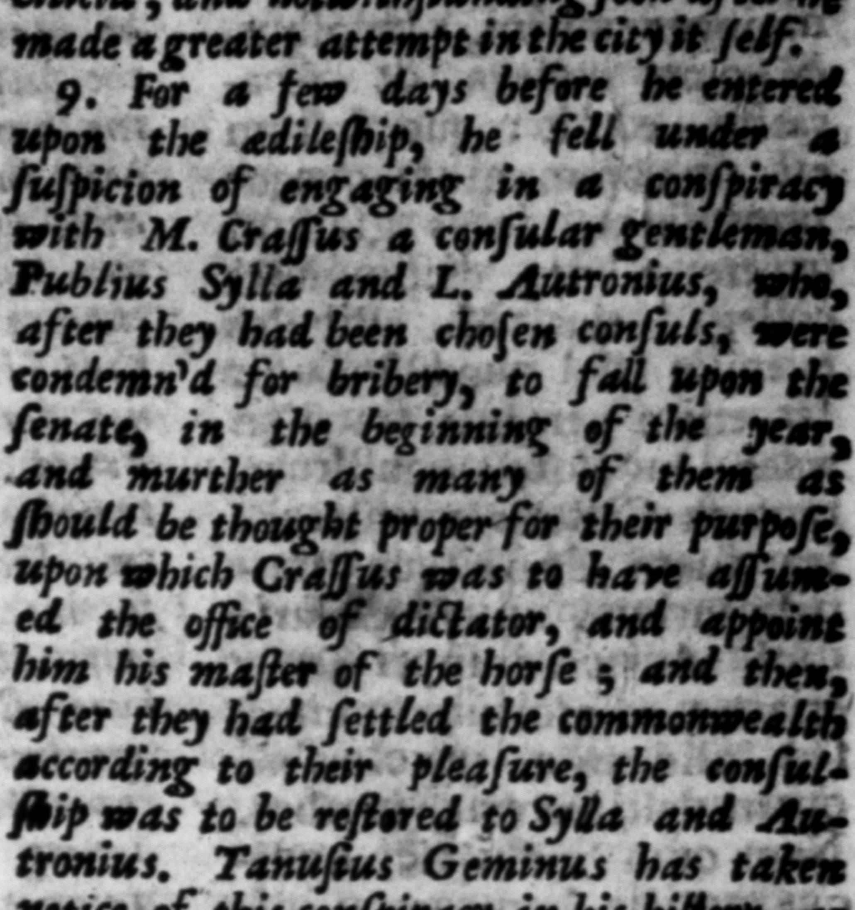
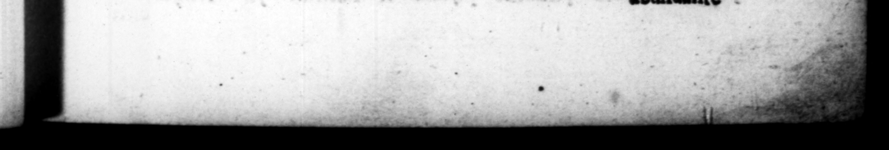

iniret, venit in ſuſpicionem conſpiraſſe cum M. Craſſo conſulari, item P. Sulla & L. Autronio, poſt nem contulatus, ambitus condemnatis, ut principio anni ſenatum adorirentur: rrucidaris quos p lacitum effec dictaturam Craſſus invaderet, ipſe ab eo magiſter — tum diceretur, conftiru ad arbicrium rep. Sallz & Autronio conſulatus reſtituerecur, Meminerunt hujus conjurationis Tanuſius Geminus in hiſtoria, . Bibulus in edictis, C Curio ter in Orationibas. De c ſigni care videtur & Cicero in quadam ad Axium epiſtola, reterens, Czſarem in conſulatu confirmaſſe re num de quo Adilis cogitarat. Tanuſius adjicic, Crafſum, poenitentia' vel meru, diem cædi deſtinatum non obĩiſſe, & iccirco ne Cæſarem quidem ſignum quod ab en dari convene rat, dediſſe. Conveniſſe autem Curio ait, ut togam de humero dejicerer, Idem Curio, fed & M. Actorius Naſo, auctore; ſunt conſpiraſſe eum etiam cum Cn. Piſone adoleſcente : cui ob ſuſpicionem urban? conjuritionis provincia Hiſpanĩa ultro extraord inem data fit : pactu 3 ut fimul foris ille, ip Rome, ad res novas . ſirgerent, per Lambranos 88 Trans — deſtitutum utriuſque confilium morte Piſonis. 10. Xdilis, præter comĩitium ac forum, baſilicaſque, etiam Capitolium ornavit porticibus ad tempus — in quibus D. JU ut us 1 R. C — 2 eerie ey in urbe molitus eſt. ** 5 7 . 9. Stquidemj ante pauco a quam dilitatem deſignatio-— ons S for 2 ren oe. — in = the _—_ A Sf 2 it had 3 — 4 hi Ader; the — 2 . ob he was concern'd in another conſpirg& with y cu. %s; to eee io chief a brews 44 255. the — was S out of courſe prevention.” That — — — — ghes | 2 Zain — the Cher did ſame in the * country people inhabiting t | Ding ala lorem the ri ver — beyond 3 but that this deſirn of their's was 7 — th death 1 To, In his edileſbip, be beauti - Hh comitium ; with 2 2 reft the courts appe 2 —— acre the ſe= RE — 2 jacent - of the * too, with piaz= £45, for the time” sf his being in office "ab s FP 3 1

